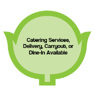

Whether you want to enjoy a casual dining experience with family or hire catering service for your friends, chop shop salads in Louisville, Kentucky, is here for you. Using 5 years of experience, we serve up the best salads, wraps, and soups that are available for dine-in, carryout, delivery, and catering. We deliver our food throughout the St. Matthews and Louisville area, so get in touch with us today to place your order.
At chop shop salads, we offer a healthy alternative to your usual lunch or dinner. For just $8, you can enjoy fresh, high-quality meals like salads, soups, wraps, and seasonal items. Our salads and wraps are made the way you like it, so you can feel certain you'll enjoy your meal to the last bite.
Treat your loved ones to a quality dining experience. Our restaurant is one of the only places where you can order fast, fresh salads made with your favorite ingredients. We offer a very diverse menu for you to choose from.